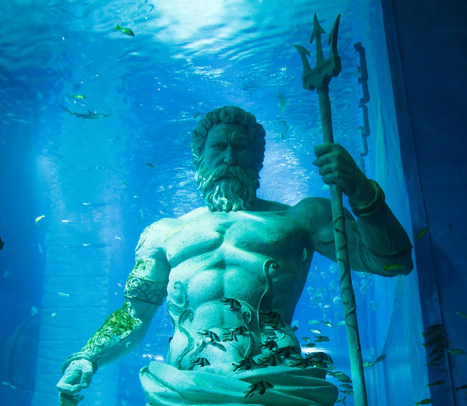
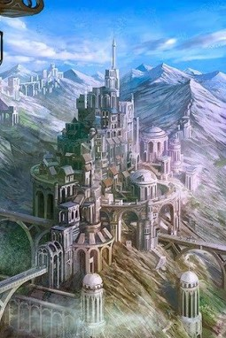

Élőhelyük
Platón (i. e. 427–i. e. 347), a híres ógörög filozófus Timaiosz és Kritiász című dialógusaiban meglehetős részletességgel szól Atlantisz szigetéről, amely állítólag Héraklész oszlopaitól nyugatra feküdt, amely a Gibraltári-szorossal azonos. Leírása szerint Atlantisz nagyobb volt, mint Kis-Ázsia és Líbia együttvéve (Líbia alatt az Egyiptomtól nyugatra fekvő egész észak-afrikai területet érti). Hatalmas királyság volt, fejlett civilizációval és ideális politikai berendezkedéssel, amelyet Platón perzsa mintára képzelt el.
Atlantisz mint politikai utópia
Platón egy politikai utópiát írt le, amelyhez Atlantisz szigetét csak ürügyül használta fel, és semmi sem támasztja alá, hogy az általa leírt hely a valóságban is létezett.
A platóni dialógus szerint a történetet Kritiász mesélte el, úgy, ahogyan Szolóntól hagyományozódott.
Társadalma
Az Elchei hölgy életnagyságú terrakotta mellszobra a spanyolországi Andalúziában került elő. A realista szobrot valamikor a Rómát megelőző időkben készítették, fölényes tudással. A nő arca, sajátos díszei egy rafinált, gazdag népről mesélnek, amelyet a régészek nem ismernek, ám minden arra utal, hogy atlantiszi származású lehetett. A remekművet azon a területen találták, amelyet Platón a gadeirai királyságnak, Atlantisz tartományának nevez. A szobor kissé ferde szeme (feltételezhető atlantiszi faji sajátosság) sejteni engedi, hogy az Elchei hölgy atlantiszi volt, aki a szigetkirályság ibériai provinciájában élt.
A Kréta-elmélet
Szolón idejére a földközi-tengeri tengerjárók ismerték a Vörös-tengeren túli távoli partokat keleten és Héraklész oszlopait nyugaton. Mégsem feltétlenül szükséges ilyen messze keresni Atlantiszt. Az egyiptomiak számára, akik a bronzkori világ összeomlása miatt évszázadokig elszigeteltségben éltek, az i. e. 6. században Kréta szigete titokzatos föld volt, amely valaha csodálatos civilizációnak adott otthont.
A kataklizmát követően minden kapcsolat megszakadhatott, amelyet a sötétség korának élhettek meg. Ma sokan, akik elfogadják Platón történetét, a minószi Kréta civilizációjában vélik fölfedezni Atlantiszt, és pusztulásának időpontját a Théra i. e. második évezred közepén történt vulkánkitörésére teszik. A Kréta–Szantorin, azaz a kükladikus kultúra Atlantisz-azonosságát egyre többen fogadják el, régész körökben már csaknem konszenzusnak tekinthető.